CS180 · Intro to Computer Vision and Computational Photography · Project 2
Fun with Filters and Frequencies
Part 1: Fun with Filters
1.1 Convolutions from scratch
I implemented 2D convolution with NumPy only, in two versions: four nested loops (output row, output column, kernel row, kernel column) and two loops (the inner kernel window becomes one vectorised np.sum of a slice times the kernel). Both flip the kernel, as convolution requires, and both support zero-padding in same, full and valid modes. same pads by k//2 on each side so the output keeps the input's size; full pads by k-1.
Code: padding and both convolutions
def pad_image(image, ph, pw):
"""Zero-pad image by ph rows and pw columns"""
H, W = image.shape
padded = np.zeros((H + 2 * ph, W + 2 * pw), dtype=image.dtype)
padded[ph:ph + H, pw:pw + W] = image
return padded
def _pad_for_mode(image, kh, kw, mode):
"""
full:
- (kh-1) rows, (kw-1) columns per side
- output size: (H + kh - 1) x (W + kw - 1)
same: (kh//2) rows, (kw//2) columns per side
valid: no padding
"""
if mode == "full":
return pad_image(image, kh - 1, kw - 1)
if mode == "same":
return pad_image(image, kh // 2, kw // 2)
if mode == "valid":
return image
raise ValueError("mode must be 'full, 'same', or 'valid'")
def conv_4loops(image, kernel, mode="same"):
image = image.astype(np.float64)
kh, kw = kernel.shape
kflip = kernel[::-1, ::-1] # convolution flips the kernel
padded = _pad_for_mode(image, kh, kw, mode)
out_h = padded.shape[0] - kh + 1
out_w = padded.shape[1] - kw + 1
out = np.zeros((out_h, out_w))
for i in range(out_h): # 1. which output row
for j in range(out_w): # 2. which output column
for u in range(kh): # 3. which row inside the kernel window
for v in range(kw): # 4. which column inside the kernel window
out[i, j] += padded[i + u, j + v] * kflip[u, v]
return out
def conv_2loops(image, kernel, mode="same"):
image = image.astype(np.float64)
kh, kw = kernel.shape
kflip = kernel[::-1, ::-1]
padded = _pad_for_mode(image, kh, kw, mode)
out_h = padded.shape[0] - kh + 1
out_w = padded.shape[1] - kw + 1
out = np.zeros((out_h, out_w))
for i in range(out_h):
for j in range(out_w):
out[i, j] = np.sum(padded[i:i+kh, j:j+kw] * kflip)
return outComparison with scipy.signal.convolve2d. On a 110×165 downscaled copy of my selfie (so the four-loop version finishes quickly), all three implementations agree with SciPy's zero-filled same output to floating-point precision (max abs difference ≤ 9e-16).
| Filter | 4 loops | 2 loops | scipy |
|---|---|---|---|
| 9×9 box | 0.992 s | 0.089 s | 0.0035 s |
| Dx (1×3) | 0.039 s | 0.084 s | 0.00035 s |
| Dy (3×1) | 0.046 s | 0.093 s | 0.00065 s |
Runtime depends on kernel size. The four-loop version does one Python-level multiply-add per kernel element per pixel, so the 9×9 box (81 taps) is about 11× slower than the two-loop version, which pushes the window work into NumPy. For the tiny 1×3 and 3×1 kernels the two-loop version is actually a little slower, because the per-pixel overhead of slicing and np.sum outweighs the saved loop iterations. SciPy is one to two orders of magnitude faster than even my two-loop version (and about 100× faster on the 1×3 kernels) because it runs in compiled C. On boundaries: my code and SciPy's default zero-fill treat out-of-image pixels as 0, which darkens borders after blurring and creates a bright fake edge on derivatives. In Part 1.2 onward I use boundary="symm" (mirror) to avoid that.
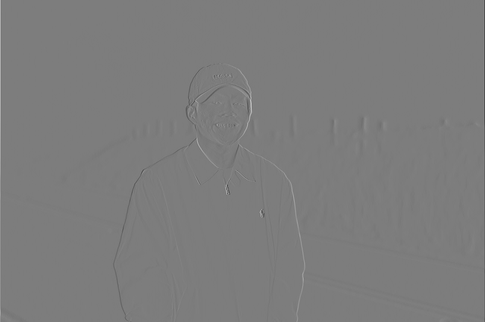
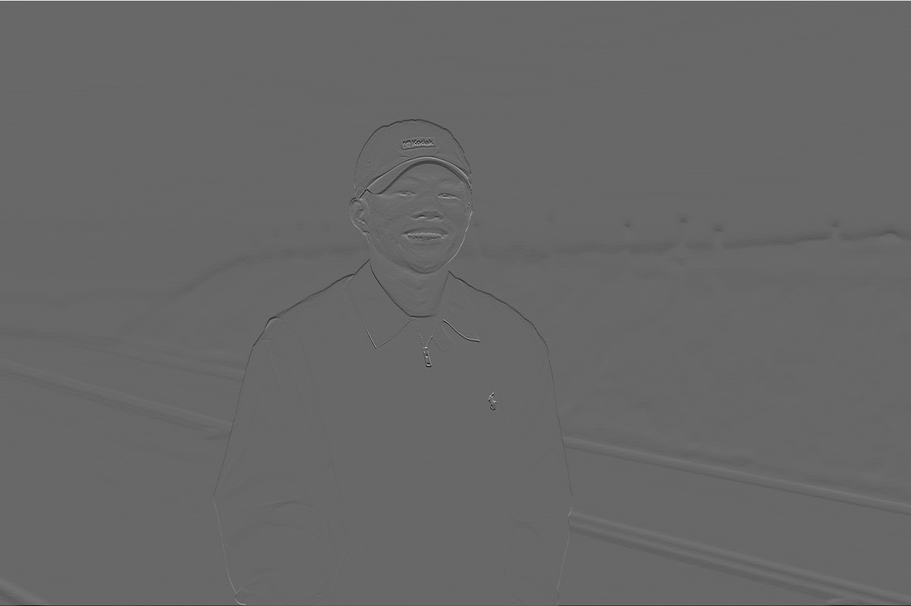
1.2 Finite difference operator
Convolving the cameraman image with Dx and Dy gives the partial derivatives; the gradient magnitude is √(gx² + gy²). Binarizing the magnitude at a threshold gives an edge map. I tried several thresholds and chose 0.25: lower values let the grainy texture of the background through as speckle, while higher values began to break up the real outlines. It is a tradeoff, and I accepted losing a few faint edges to keep the background clean.

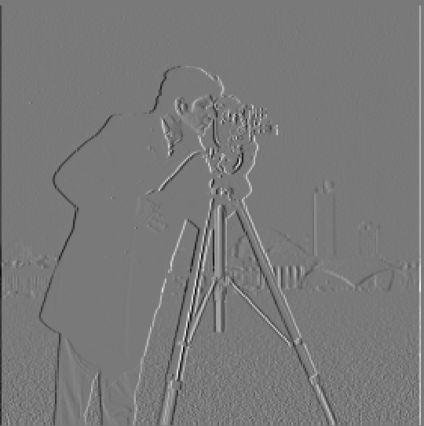
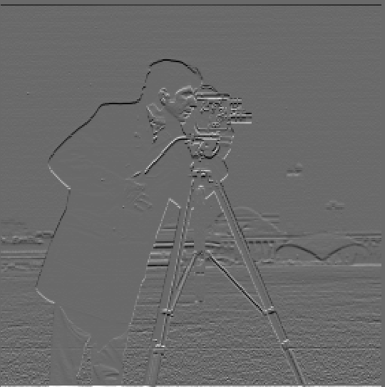
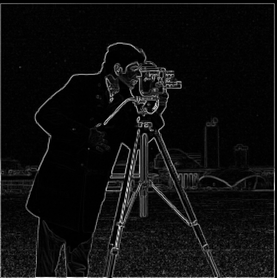
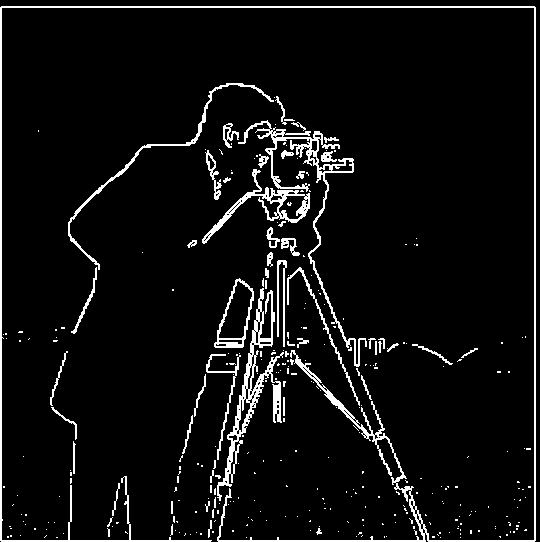
Code
def binarize(m, threshold):
return (m > threshold).astype(np.float64)
def gradient_magnitude(img, Dx, Dy):
# Partial derivatives
# boundary="symm" mirrors the edges, which avoids the fake bright border with zero padding
gx = convolve2d(img, Dx, mode="same", boundary="symm")
gy = convolve2d(img, Dy, mode="same", boundary="symm")
# Calculate magnitude of gradient (i.e., how strong the edge is at each pixel)
mag = np.sqrt(gx**2 + gy**2)
return gx, gy, mag1.3 Derivative of Gaussian (DoG) filter
The plain finite difference result is noisy, so I first smoothed the image with a Gaussian (σ = 3, kernel size 2·⌈3σ⌉+1 = 19, built with cv2.getGaussianKernel and an outer product) and then repeated the pipeline. The edges are thicker and smoother and the noise is largely gone, which let me use a much lower binarization threshold (0.055, since blurring shrinks gradient magnitudes). The tradeoff is that fine detail is blurred away.


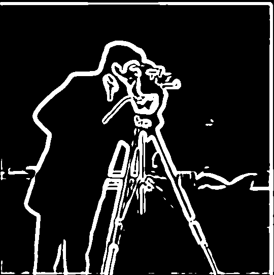
Because convolution is associative, blur-then-differentiate equals convolving once with a derivative-of-Gaussian filter: DoGx = G ∗ Dx, DoGy = G ∗ Dy (computed with mode="full" so nothing is cropped). I checked that the two routes agree: away from the border, where padding differs, the results match with np.allclose and a maximum absolute difference of 1.5e-15.
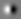
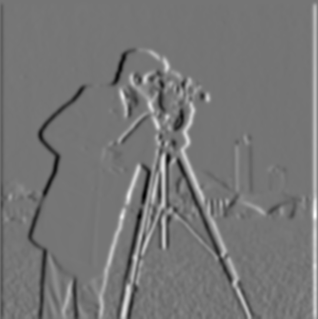
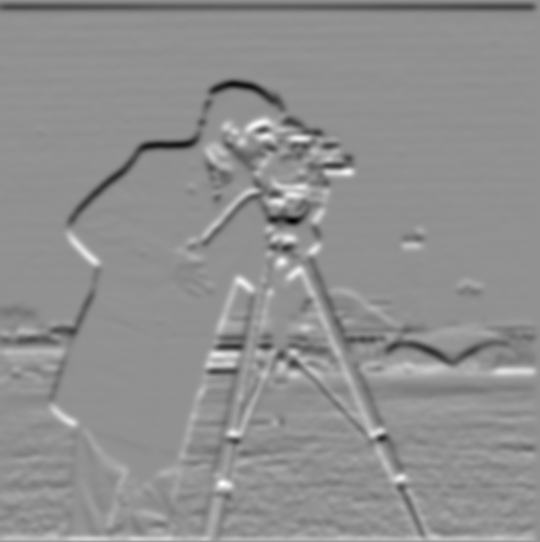
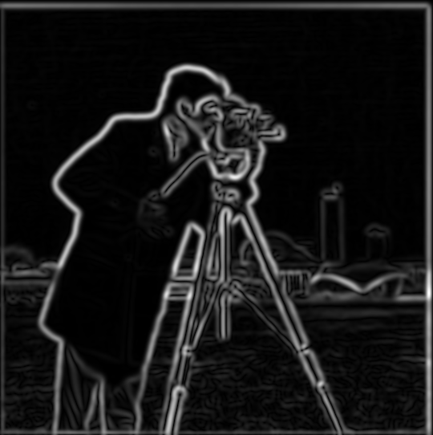

Code
# Gaussian, then DoG filters
gauss_1d = cv2.getGaussianKernel(ksize, sigma)
gauss_2d = gauss_1d @ gauss_1d.T
DoG_x = convolve2d(gauss_2d, Dx, mode="full")
DoG_y = convolve2d(gauss_2d, Dy, mode="full")
gx_DoG = convolve2d(img, DoG_x, mode="same", boundary="symm")
gy_DoG = convolve2d(img, DoG_y, mode="same", boundary="symm")
mag_dog = np.sqrt(gx_DoG**2 + gy_DoG**2)Part 2: Fun with Frequencies
2.1 Image sharpening (unsharp mask)
A Gaussian G is a low-pass filter, so image − G∗image keeps only the high frequencies (the detail). Adding α times that detail back gives a sharper-looking image: sharp = f + α(f − f∗G). Because convolution is linear this collapses to one kernel, the unsharp mask filter (1+α)·δ − α·G, where δ is the identity (impulse) filter. I apply it per colour channel with σ = 2.
Code
def impulse(ksize):
"""The identity filter (convolving with this returns unchanged image)"""
d = np.zeros((ksize, ksize))
d[ksize // 2, ksize // 2] = 1.0
return d
def apply_per_channel(img, kernel):
"""Convolve each of the H x W x 3 channels separately, then restack."""
out = np.zeros_like(img)
for c in range(3):
out[..., c] = convolve2d(img[..., c], kernel, mode="same", boundary="symm")
return out
def sharpen_two_steps(img, G, alpha):
blur = apply_per_channel(img, G)
detail = img - blur
return img + alpha * detail
def sharpen_one_kernel(img, G, alpha):
delta = impulse(G.shape[0])
kernel = (1 + alpha) * delta - alpha * G
return apply_per_channel(img, kernel)
Larger α pushes more high-frequency energy back in, giving crisper edges but also halos and amplified noise.

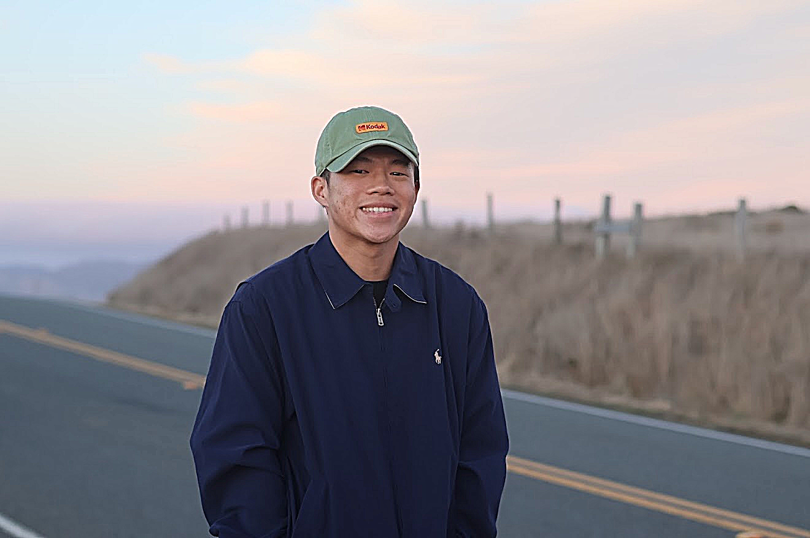
Evaluation: blur a sharp photo, then sharpen it again
I blurred a sharp photo with σ = 5, then applied the unsharp mask (α = 5). Sharpening restores the appearance of edges but cannot bring back detail that blurring removed: the re-sharpened image looks crisper than the blurred one yet is not identical to the original, since the finest texture is gone for good and a large α can exaggerate noise and edges. Left to right: original, blurred, re-sharpened.
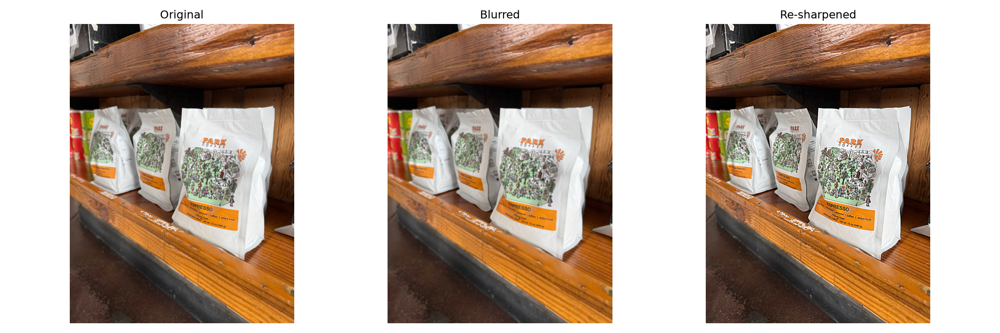
2.2 Hybrid images
Following Oliva, Torralba and Schyns, a hybrid image is the low-pass of one image (Gaussian, σ1) plus the high-pass of another (the image minus its Gaussian, σ2). Up close the high frequencies dominate; from far away only the low frequencies remain, so the interpretation changes with viewing distance. Aligning the two images on key features (e.g. the eyes) matters a lot for the effect.
Code
def align_images(im1, im2, pts1, pts2):
"""pts1, pts2: [(x1,y1),(x2,y2)] two corresponding points in each image
(e.g. two eyes). Crops/scales/translates im2 to align with im1. 2D grayscale in/out."""
(x1a, y1a), (x1b, y1b) = pts1
(x2a, y2a), (x2b, y2b) = pts2
d1 = np.hypot(x1b - x1a, y1b - y1a)
d2 = np.hypot(x2b - x2a, y2b - y2a)
scale = d1 / d2
im2_scaled = transform.rescale(im2, scale)
x2a, y2a = x2a * scale, y2a * scale
dy, dx = int(y1a - y2a), int(x1a - x2a)
canvas = np.zeros(im1.shape)
h, w = im2_scaled.shape
y0, x0 = max(0, dy), max(0, dx)
y1_, x1_ = min(im1.shape[0], dy + h), min(im1.shape[1], dx + w)
sy0, sx0 = y0 - dy, x0 - dx
canvas[y0:y1_, x0:x1_] = im2_scaled[sy0:sy0 + (y1_ - y0), sx0:sx0 + (x1_ - x0)]
return canvas
def hybrid_image(im1, im2, sigma1, sigma2):
"""im1: low freq source, im2: high freq source. Both 2D grayscale, same shape, aligned."""
G1 = gaussian_kernel(sigma1)
G2 = gaussian_kernel(sigma2)
low = convolve2d(im1, G1, mode="same", boundary="symm")
high = im2 - convolve2d(im2, G2, mode="same", boundary="symm")
hybrid = low + high
return np.clip(hybrid, 0, 1), low, highHybrid 1: me + Iron Man
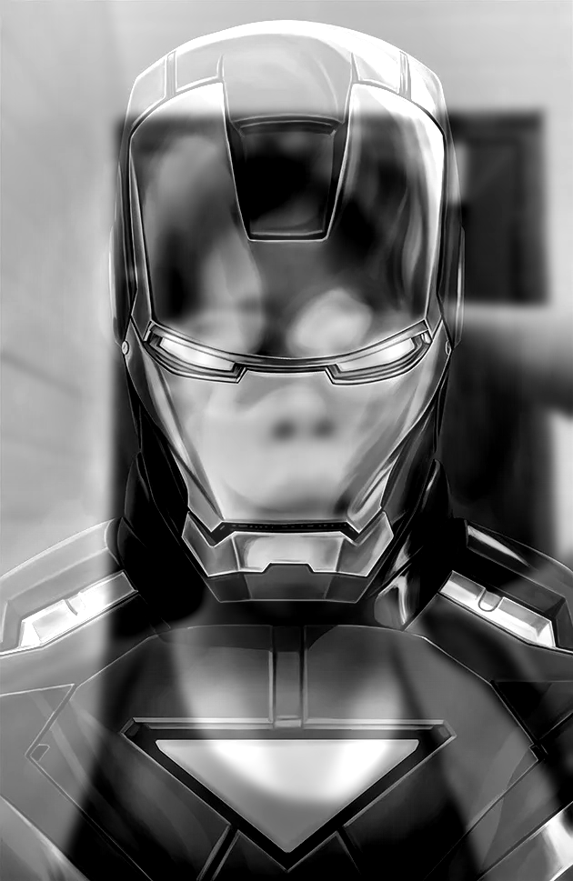
Hybrid 2: cat + me
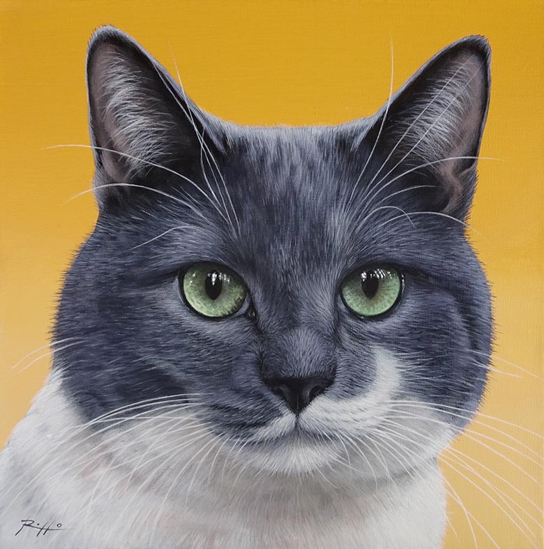
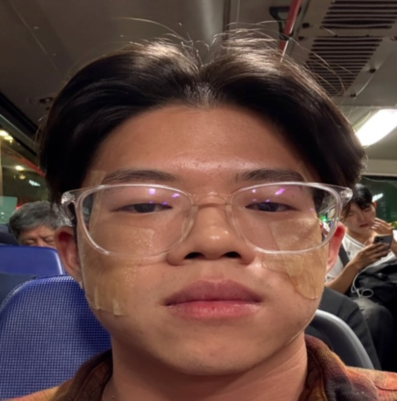
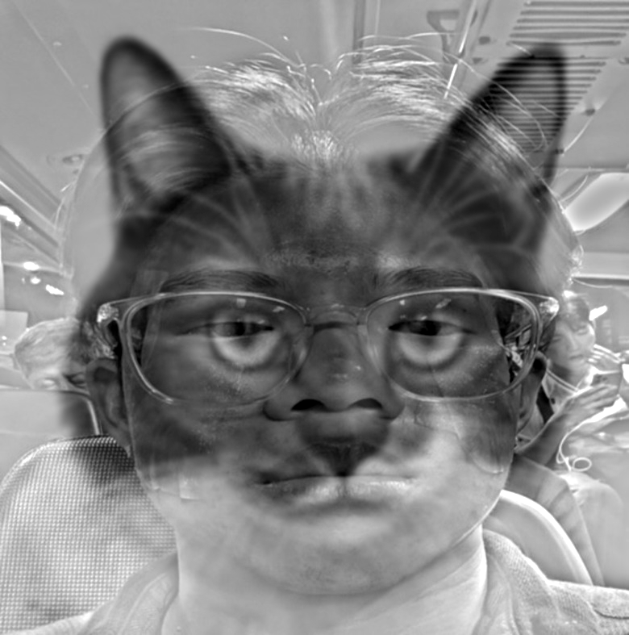
Hybrid 3 (favourite): full process
Cutoffs: Gaussian σ = 6 for the low-pass image and σ = 14 for the image being high-passed (found by experimentation). The low-pass keeps what survives a σ = 6 blur, so the first face stays recognisable from far away. The high-pass is the image minus a σ = 14 blur: a larger σ2 lowers the cutoff and lets more mid-frequency detail through, while a smaller σ2 would leave only the very finest detail, so σ2 controls how strongly the second face competes with the first. The log-magnitude Fourier transforms show it: the low-passed image concentrates its energy near the centre (low frequencies), the high-passed image has had that centre removed, and the hybrid contains both.
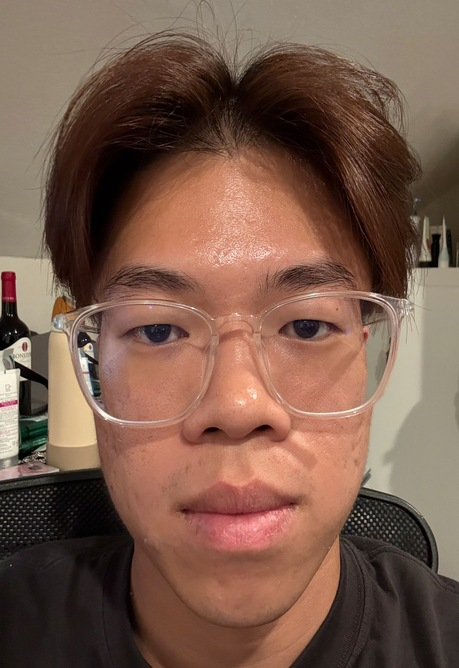
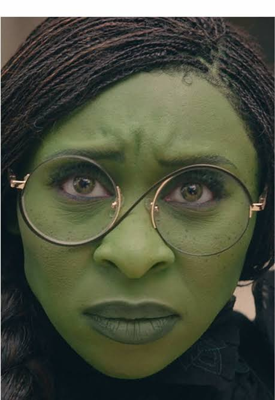
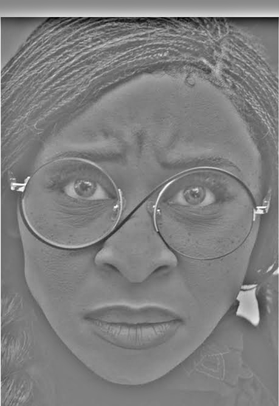
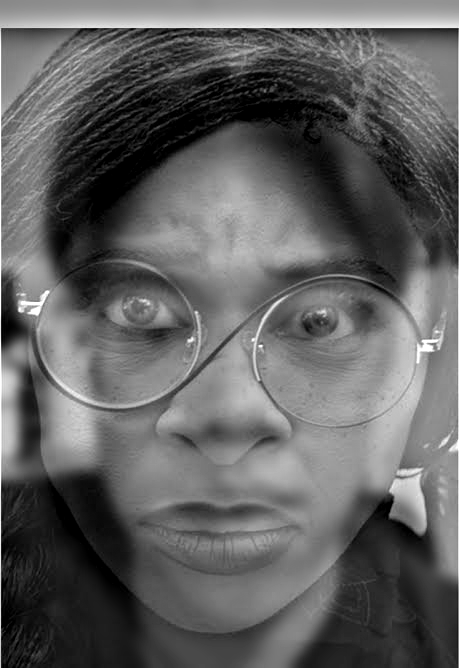
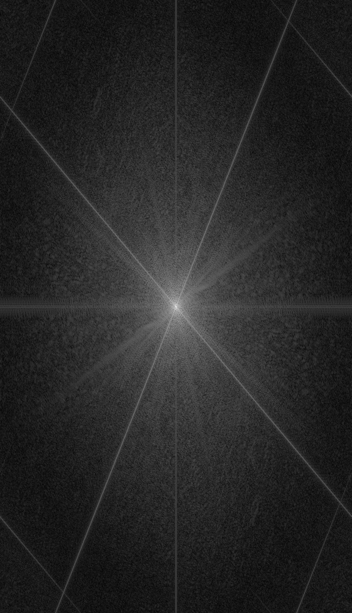
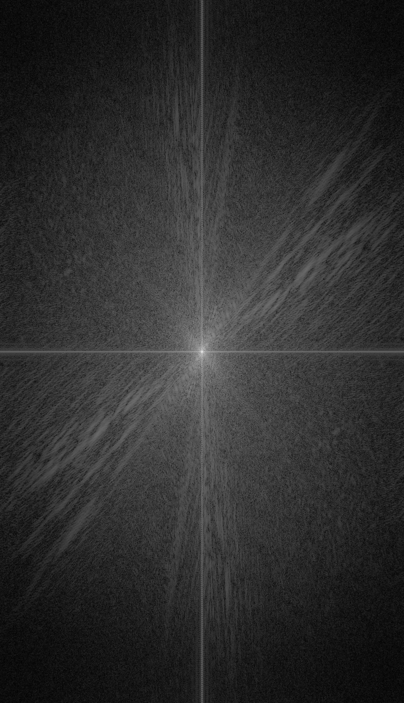
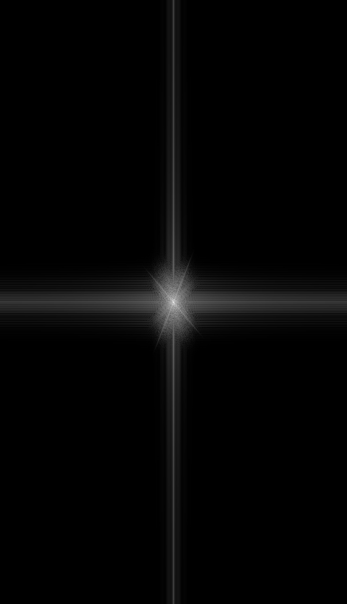
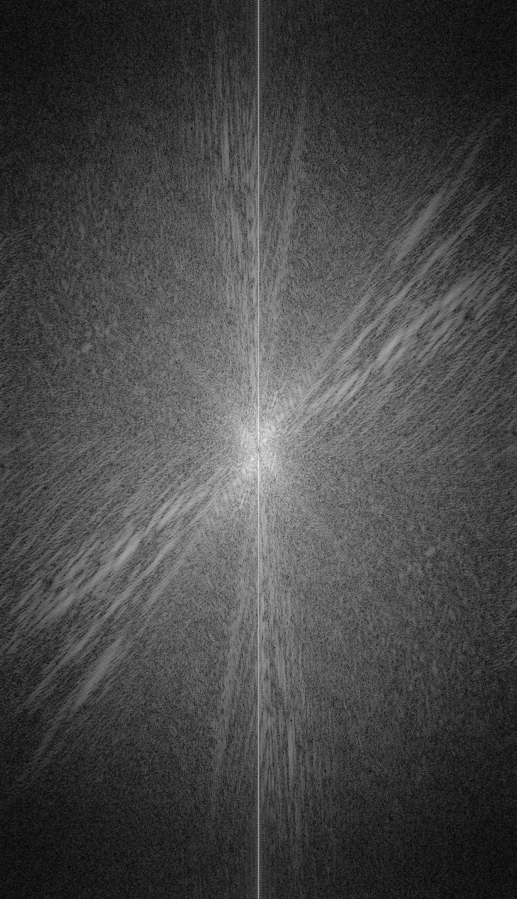
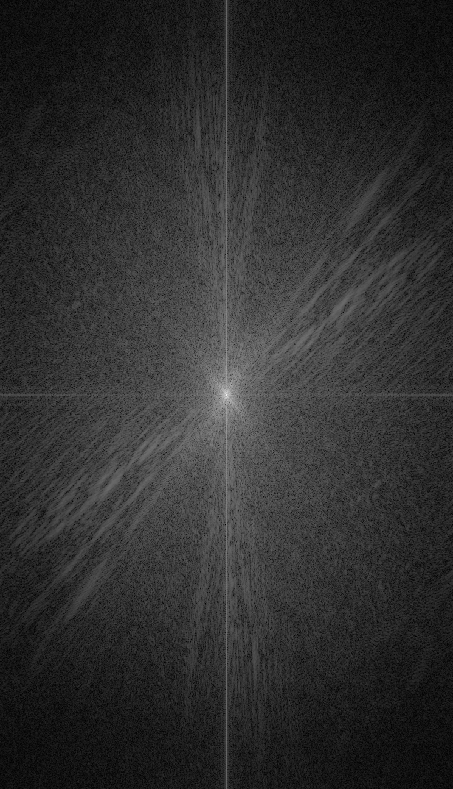
2.3 Gaussian and Laplacian stacks
A stack is like a pyramid without downsampling, so every level has the full resolution. Level i of the Gaussian stack is the previous level blurred again, with σ doubling each level (σ = 2, 2, 4, 8, …). The Laplacian stack is the difference of consecutive Gaussian levels, with the last level being the final (most blurred) Gaussian level, so the Laplacian levels sum exactly back to the original image. I implemented both from scratch (no pyrDown).
Code
def gaussian_stack(img, sigma, levels):
"""Same size at every level (no downsampling), sigma grows each level."""
stack = [img]
for i in range(1, levels):
G = gaussian_kernel(sigma * (2 ** (i - 1))) # widen the blur each level
stack.append(apply_per_channel(stack[-1], G))
return stack
def laplacian_stack(gstack):
lstack = [gstack[i] - gstack[i + 1] for i in range(len(gstack) - 1)]
lstack.append(gstack[-1]) # last level = final Gaussian level (so it all sums back)
return lstackApple, 5 levels. Top: Gaussian stack. Bottom: Laplacian stack (offset by +0.5 for display, except the last level).

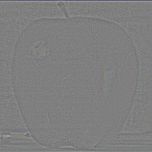
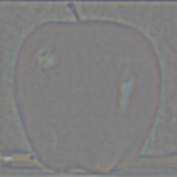

2.4 Multiresolution blending
To blend images A and B, I build Laplacian stacks of both and a Gaussian stack of the mask. At each level the result is maski·LA,i + (1 − maski)·LB,i; summing all levels gives the blend. Blurring the mask progressively means high frequencies are joined along a sharp seam and low frequencies along a very soft one, which hides the transition.
Code
def blend(imA, imB, mask, sigma=2, levels=5):
"""mask: same H,W as imA/imB, values in [0,1], 1 = show imA, 0 = show imB."""
mask3 = np.repeat(mask[:, :, None], 3, axis=2) if mask.ndim == 2 else mask
LA = laplacian_stack(gaussian_stack(imA, sigma, levels))
LB = laplacian_stack(gaussian_stack(imB, sigma, levels))
GR = gaussian_stack(mask3, sigma, levels) # blur the mask too -> smooth transition
blended_stack = [GR[i] * LA[i] + (1 - GR[i]) * LB[i] for i in range(levels)]
result = sum(blended_stack)
return np.clip(result, 0, 1)

More blends


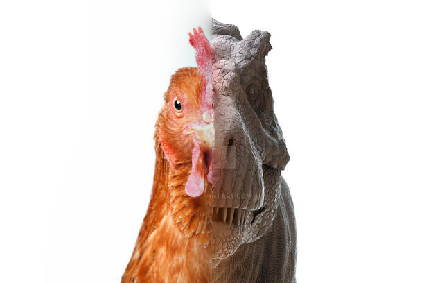
Irregular masks. Two blends use non-straight masks: an ellipse (T. rex head over a landscape) and a hand-drawn polygon (Luke over Middle-earth, mask clicked out with draw_mask.py), plus a fruit blend with an elliptical mask.


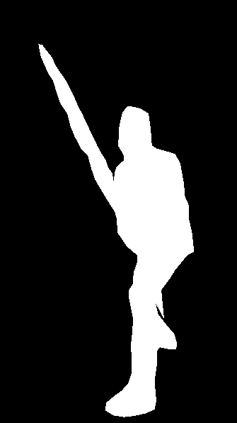
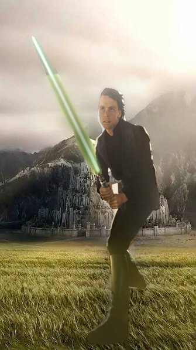
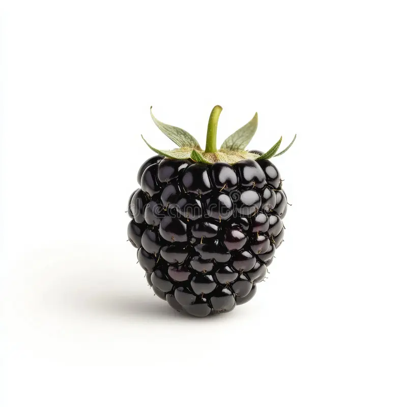
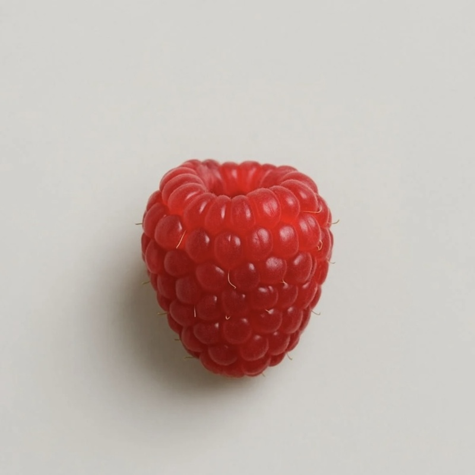
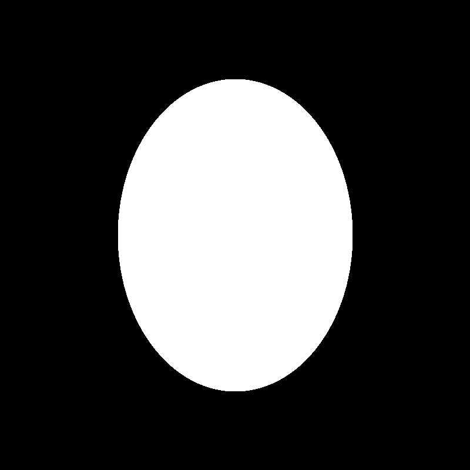
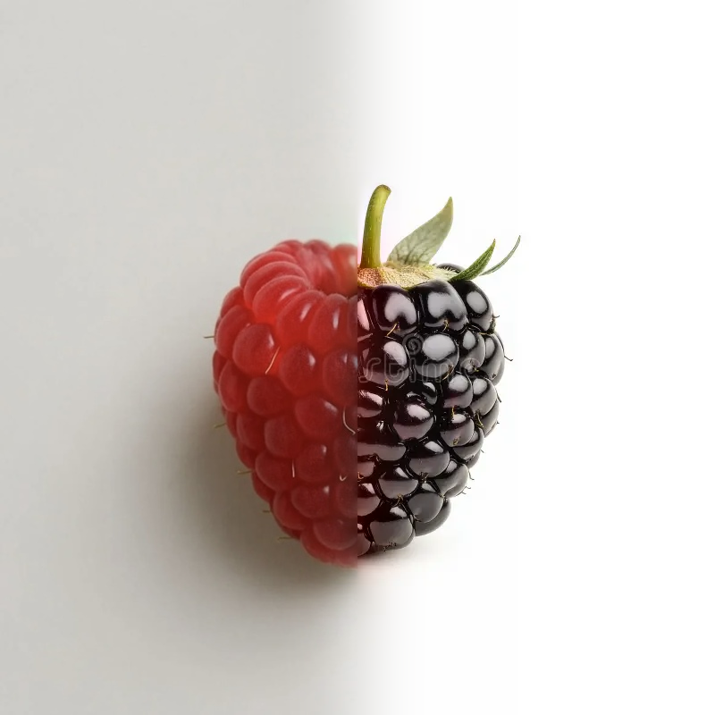
The most important thing I learned
Almost every image-processing operation in this project is the same operation, convolution, with a different kernel. It is very helpful thinking in frequencies: edges are high frequencies, blurs are low-pass filters, sharpening boosts the high band, and hybrid images and seamless blends work by treating each frequency band separately.